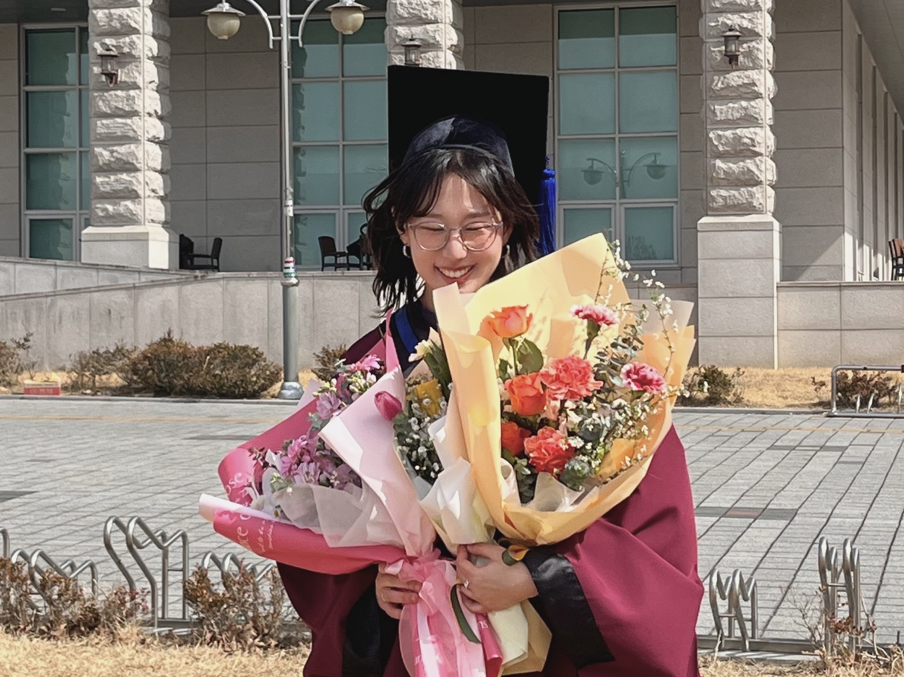

Sewon Kim
Prospective PhD Student (Fall 2026)
Undergraduate Researcher, Natural Language Learning Lab
Department of Computer Engineering, Jeonbuk National University
I am applying to PhD programs in the United States for Fall 2026. My research focuses on advancing large language models through structured knowledge integration and multi‑agent reasoning. I aim to build reliable, interpretable systems that bridge theoretical NLP with real‑world applications in embodied intelligence.
Currently, I serve as an undergraduate researcher at the Natural Language Learning Lab under the supervision of Prof. Hyun-je Song, where I investigate knowledge graph–enhanced retrieval-augmented generation (RAG) architectures. My research aims to improve factual accuracy and reasoning capabilities in LLMs by integrating structured knowledge graphs with neural embedding spaces, enabling more reliable and interpretable AI systems.
Interests: Knowledge Graph–Enhanced RAG, Multi‑Agent Systems, Chain‑of‑Thought Reasoning, and Embodied AI. I welcome conversations with prospective advisors and collaborators.
